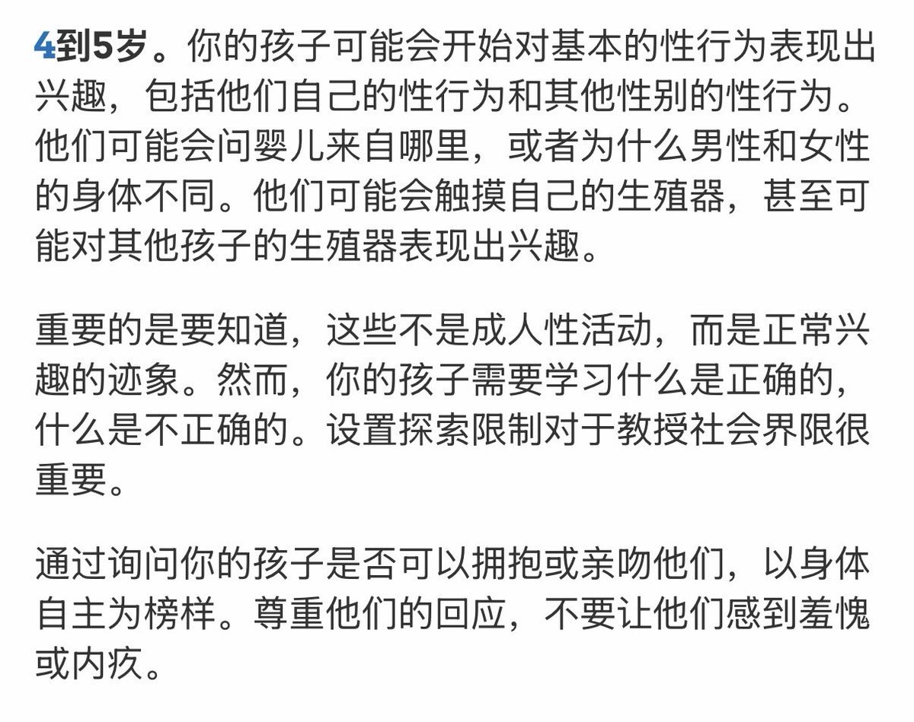

1713✝️❤️🔥
@sss_1713
四岁孩子什么都懂的概率究竟有多大？他可以因为不小心而道歉，这是理所当然的，但不应该被从大人的视角去揣测，那是不可理喻的。
美国儿科学会（AAP）指出即使4-5岁孩子的孩子可能会开始对基本的性行为表现出兴趣，也不是成人性活动。

我当刚强壮胆
@wodanggangqiang
那个视频我看过了，感觉小孩就是故意的，大家也不要觉得一个四岁的孩子真的什么都不懂，现在小孩真的很早熟。 https://t.co/0xAY0G5JqH